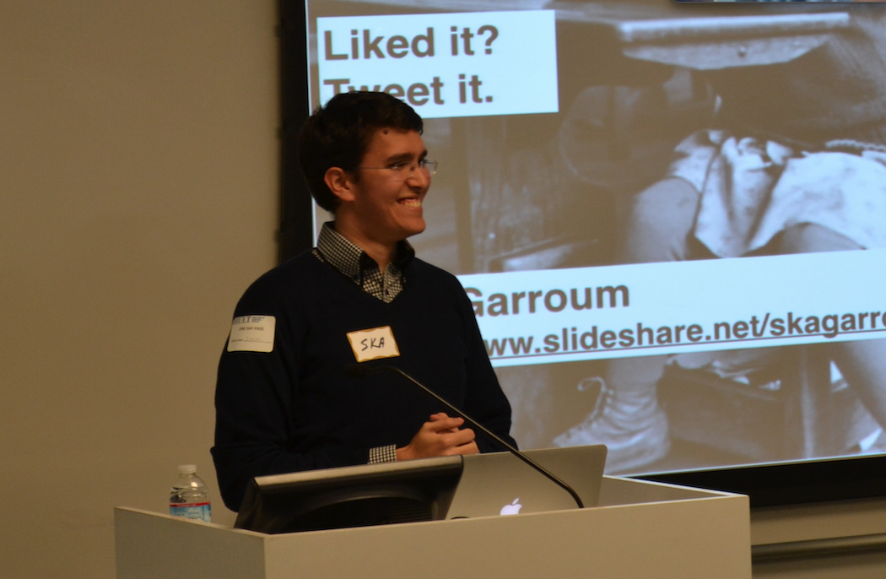

Currently interested in
💬 Communication, because we spent more and more of our time communicating
✨ AI, because our intelligence may not be enough
👓 AR, because our normal reality is not enough
🙌 Design, because design is experience
📖 Learning, testing out self-learning systems, knowledge hubs and ways to learn
Currently building
Airy
Message every business like you’d message friends.
Giving back
GiveNow
Uber for donation. Clothed 500 in the winter of 15/16.

Talks
On Metrics, UX, Dark Patterns and interests.
Past
Compass
Ex Startup genome project. Somewhere between product and marketing. With a bit of customer development, research and business development in the middle.
Thesis
A network theoretic analysis of Microfinance. I like networks. And development economics.
German Federal Ministry of Justice
Organized and supervised an internship for chinese students. All german ministries participated.
Places I call home